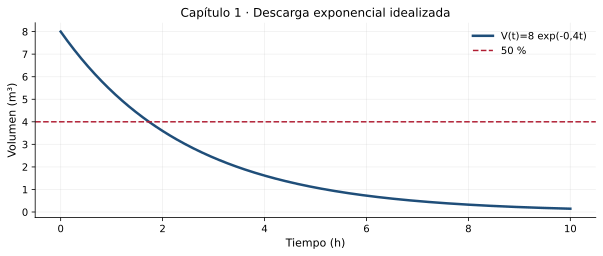

Conceptos, clasificación, modelación y problemas de valor inicial
Resultado de aprendizaje
Identificar y clasificar ecuaciones diferenciales, construir modelos de primer orden y verificar analítica y computacionalmente sus soluciones.
Conceptos clave: EDO y EDP, orden y linealidad, condición inicial, variables y unidades, modelo físico
1.1. Fenómenos que cambian y modelos matemáticos
Una ecuación diferencial permite describir una cantidad desconocida a partir de sus tasas de variación. En ingeniería civil, el volumen de agua en un depósito, la temperatura durante un proceso de curado, el desplazamiento de una estructura o la concentración de un contaminante cambian según leyes físicas y restricciones del entorno.
La igualdad anterior es un balance: variación del almacenamiento = aportes − pérdidas. El primer trabajo del ingeniero no es integrar, sino definir el sistema, elegir las variables y justificar los supuestos.
Compruebe la idea principal: identifique las condiciones bajo las cuales el procedimiento explicado es válido.
1.2. Definiciones y clasificación
Una ecuación diferencial ordinaria (EDO) involucra derivadas de una función de una sola variable independiente. Una ecuación en derivadas parciales (EDP) contiene derivadas parciales respecto de varias variables independientes.
\[F(t,y,y\prime,\ldots,y^{(n)})=0\]
El orden es el de la derivada de mayor grado de diferenciación: \(y\prime+3y=0\) es de primer orden y \(y\prime\prime+4y=0\), de segundo. Una EDO lineal se expresa como \(a_n(t)y^{(n)}+\cdots+a_1(t)y\prime+a_0(t)y=g(t)\); la incógnita y sus derivadas aparecen a la primera potencia, sin productos entre ellas. \(y\prime=y^2\) es no lineal.
La forma normal de primer orden es \(y\prime=f(t,y)\).
Una EDO es autónoma cuando el lado derecho depende de \(y\), pero no explícitamente de \(t\).
Un término fuente \(g(t)\) representa entradas o excitaciones externas en una EDO lineal.
Compruebe la idea principal: identifique las condiciones bajo las cuales el procedimiento explicado es válido.
1.3. Datos iniciales, solución y comprobación
Una solución es una función diferenciable en un intervalo donde satisface la ecuación. La solución general incorpora una o más constantes arbitrarias; una solución particular queda seleccionada mediante información adicional, como \(y(t_0)=y_0\). Para una EDO de segundo orden suelen requerirse dos condiciones iniciales.
La comprobación consiste en derivar \(y(t)\), sustituir en la EDO y verificar la condición inicial. La coincidencia gráfica, por sí sola, no prueba la solución.
Compruebe la idea principal: identifique las condiciones bajo las cuales el procedimiento explicado es válido.
1.4. Unidades y alcance del modelo
Si \(V\) está en m³ y \(t\) en horas, en \(V\prime=-kV\) la constante \(k\) está en h\(^{-1}\). Esta prueba de homogeneidad dimensional ayuda a detectar errores. Una ley exponencial de vaciado es un modelo idealizado: un caudal real de descarga puede depender de la altura de la lámina y de la geometría del depósito.
Para un problema de valor inicial, condiciones suficientes de continuidad de \(f(t,y)\) y de su derivada parcial respecto a \(y\) garantizan existencia y unicidad locales; no deben confundirse con validez física universal del modelo.
Compruebe la idea principal: identifique las condiciones bajo las cuales el procedimiento explicado es válido.
En (a), la derivada más alta es la primera: orden 1. Los coeficientes dependen de \(t\); es lineal y homogénea.
En (b), la derivada más alta es la segunda: orden 2. La función y sus derivadas son de primer grado; es lineal homogénea.
En (c), aparece \(y^2\): orden 1, no lineal y no autónoma (depende explícitamente de \(t\)).
ResultadoClasificación: (a) EDO lineal de orden 1; (b) EDO lineal de orden 2; (c) EDO no lineal de orden 1.
Comprobación y criterio: Para distinguir orden de grado de la incógnita, identifique primero la derivada más alta y después examine los productos y potencias.
Ejemplo 2. Depósito ideal
Un tanque contiene \(V_0=8\,\mathrm{m^3}\) y cumple \(V\prime=-0.4V\), con \(t\) en horas. Determine \(V(t)\) y el tiempo para alcanzar la mitad.
Separar: \(dV/V=-0.4\,dt\), suponiendo \(V>0\).
Integrar: \(\ln V=-0.4t+C\), luego \(V(t)=Ae^{-0.4t}\).
Imponer \(V(0)=8\): \(A=8\). Para \(V=4\), resolver \(e^{-0.4t}=1/2\).
Comprobación y criterio: \(V\prime(t)=-3.2e^{-0.4t}=-0.4V(t)\) y \(V(0)=8\).
Ejemplo 3. Condición inicial y dominio
Considere \(t\,y\prime=y\), con \(y(0)=0\). ¿La condición garantiza una sola solución?
Para \(t\ne0\), se obtiene \(y\prime=y/t\); la expresión no es continua en \(t=0\).
Compruebe \(y_1(t)=0\) y \(y_2(t)=t\): ambas cumplen \(ty\prime=y\) para todo \(t\).
Ambas satisfacen \(y(0)=0\), pero son diferentes. No hay unicidad para este PVI.
ResultadoLa misma condición inicial admite múltiples soluciones: \(y(t)=Ct\), con cualquier \(C\in\mathbb{R}\).
Comprobación y criterio: La ecuación en forma normal tiene una singularidad en \(t=0\); no cabe aplicar allí directamente el criterio usual de unicidad.
Laboratorio de MATLAB
El archivo del capítulo contiene experimentos reproducibles y parámetros modificables, organizados en secciones %%. Puede abrirlo en el Editor, ejecutarlo por partes y convertirlo en Live Script de acuerdo con la versión instalada de MATLAB.

Representación inicial de referencia. Los scripts amplían el análisis con nuevas simulaciones.
Requisito: MATLAB con funciones básicas y ode45. No se necesita Symbolic Math Toolbox para las actividades incluidas.
Resuelva con razonamiento matemático, verifique por sustitución cuando sea posible y discuta dimensiones, dominio o interpretación de los resultados. Se incluyen pistas y respuestas de algunos ejercicios más adelante.
Nivel I · Conceptos y reconocimiento
Identifique el orden de \(y\prime\prime\prime+2y\prime-y=0\).
Clasifique según linealidad: \(y\prime+t^2y=\sin t\).
Clasifique \(y\prime=y(1-y)\): orden, linealidad y autonomía.
Diferencie EDO y EDP en \(\partial u/\partial t=\alpha\,\partial^2u/\partial x^2\).
Nivel II · Procedimientos y verificación
Decida si \(y(t)=3e^{-2t}\) satisface \(y\prime+2y=0\).
Formule una EDO para un depósito cuya pérdida de volumen es proporcional al volumen presente.
Especifique unidades de \(k\) en \(C\prime=-kC\), si \(C\) está en mg/L y el tiempo en días.
Resuelva \(y\prime=-0.5y\), \(y(0)=10\).
Calcule el valor de la solución del ejercicio anterior en \(t=4\).
Nivel III · Aplicaciones e interpretación
Calcule el tiempo necesario para que \(y\) disminuya al 25 % de su valor inicial.
Plantee un balance para una poza de retención con caudal entrante \(Q_e(t)\) y saliente \(Q_s(t)\).
Discuta la diferencia entre solución numérica, solución analítica y datos medidos.
Explique por qué un modelo que predice volumen negativo no puede aceptarse para un depósito real.
Argumente si conocer solo \(x(0)\) basta normalmente para resolver \(x\prime\prime+\omega^2x=0\).
Trabajo de aplicación
4 actividades al finalizar el tema
A1 · Diagnóstico conceptual
Elabore una matriz con 10 ecuaciones: variable dependiente, independiente, orden, linealidad y autonomía. Compare las respuestas en grupos.
Evidencia mínima: procedimiento razonado, resultados con unidades cuando correspondan, una verificación y conclusión propia.
A2 · MATLAB: solución doble
Reproduzca \(V\prime=-0.4V\) con fórmula y ode45. Calcule el error máximo sobre tiempos comunes usando interp1.
Evidencia mínima: procedimiento razonado, resultados con unidades cuando correspondan, una verificación y conclusión propia.
A3 · Sensibilidad de parámetros
Repita para \(k=0.2,0.4,0.8\,\mathrm{h^{-1}}\). Represente las curvas sobre el mismo eje y explique el cambio en la escala temporal.
Evidencia mínima: procedimiento razonado, resultados con unidades cuando correspondan, una verificación y conclusión propia.
A4 · Ingeniería civil
Redacte una ficha de modelación (variables, unidades, simplificaciones, validez y limitaciones) de un sistema de almacenamiento de agua. No utilice el modelo ilustrativo como diseño hidráulico.
Evidencia mínima: procedimiento razonado, resultados con unidades cuando correspondan, una verificación y conclusión propia.
Orientación de valoración, no asignación oficial
Para una actividad docente de práctica sobre 5 puntos se sugiere: planteamiento 1 p.; procedimiento 1.5 p.; verificación/uso de MATLAB 1 p.; interpretación 1 p.; presentación y unidades 0.5 p. El docente decidirá qué actividades se califican según el sílabo vigente.
Autoevaluación conceptual
Abra cada pregunta para comprobar su interpretación. Estas preguntas son de práctica y no constituyen una evaluación en línea.
¿Qué determina el orden de una EDO?
La derivada de mayor orden que aparece.
¿Por qué debe comprobarse la dimensión de \(k\)?
Porque una ecuación física exige unidades coherentes a ambos lados.
¿Es lineal \(y\prime+y^2=0\)?
No, por el término cuadrático en la incógnita.
Respuestas seleccionadas de los ejercicios
Contraste solo después de intentar resolver. Una expresión correcta requiere también procedimiento, intervalo de validez e interpretación cuando correspondan.
1: orden 3.
5: sí, porque \(y\prime=-6e^{-2t}\).
8: \(y=10e^{-0.5t}\).
9: \(y(4)=10e^{-2}\approx1.353\).
10: \(t=\ln4/0.5\approx2.773\).
Lectura complementaria y observaciones
El capítulo 1 es la base conceptual del contenido 1.1 del sílabo; el modelo de almacenamiento es exclusivamente didáctico.
Referencia bibliográfica: Calderón, G., Arango, J. y Gómez, A. (2023), Ecuaciones diferenciales para estudiantes de ciencias e ingenierías, Universidad del Valle; Zill, D. G. (2015), Ecuaciones diferenciales con aplicaciones de modelado. Los textos, ejercicios y gráficos de esta página son producciones nuevas y no reproducen el contenido editorial suministrado.